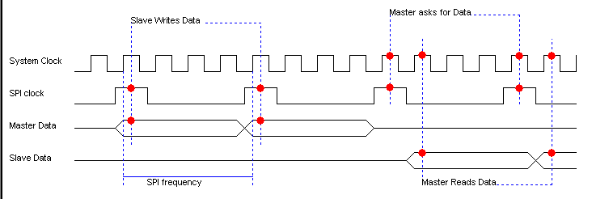
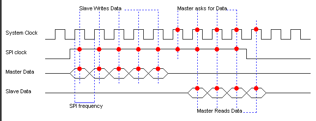

May 2002
JALss, SPI timing
SPI timing is faked a little, to be able to use the maximum SPI frequency, without slowing down the simulation.
(Full speed SPI needs a 4-phase clock, while the simulator just has a 2-phase clock)
So not the falling edge, yields a valid data point, but a logic high value of the SPI clock in the first phase of the system clock (logic high) yields a valid data point.
When the master reads from a slave, the reading cycle is shifted 1 system clock cycle. For the total time this is not an unrealistic simulation, because in the real world there will be an extra delay when switching from master-write to master-read.
Especially when these signals are viewed by the scope or when designing new devices, it's necessary to be aware of these facts.

SPI timing, frequency lower then maximum frequency

SPI timing, frequency equals maximum frequency